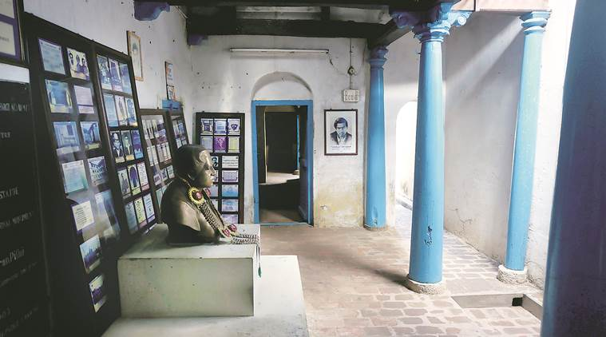
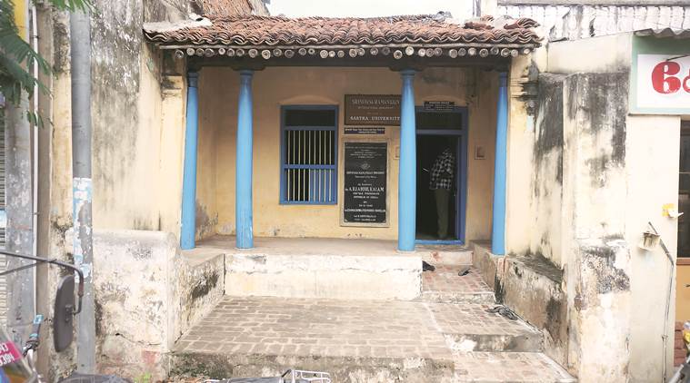
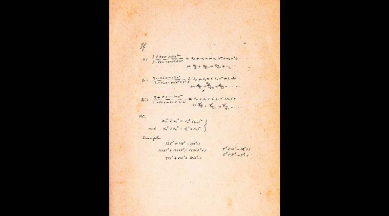

In the Chennai of the early 1900s, few would have noticed the young accountant sprinting down Beach Road to his Madras Port Trust office north of Marina Beach. His coat tail flapping in the breeze, his flowing hair coming undone, a brick red namam (tilak) on his forehead, he would hurry down the road, past the University of Madras. A couple of years later, that sprint was to end at the gates of the university, which took in the “young, dark man”, Srinivasa Ramanujan, as a mathematics research fellow. The rest is infinity — and the subject of The Man Who Knew Infinity, Matthew Brown’s movie that opened the International Film Festival of India in Goa, with Dev Patel playing the mathematician.
In 1914, four years after he began his fellowship at Madras University, Ramanujan boarded the SS Nevasa and set sail for England. When he returned in 1919, he was bent with illness, fighting malnourishment and suspected tuberculosis. He died in 1920, a promising life cut short but not before he had stunned the West with his intuitive theorems in mathematics. With over 3,900 theorems and results to his credit, his formulae, scribbled on scraps of paper, continue to be relevant to problems at the frontiers of mathematics. His infinite series for pi (symbol) was among his most celebrated findings. When he died, he was only 32, a life too short to leave too many footprints, but we go looking for them anyway.
Kumbakonam is where it begins. The temple town in Thanjavur district, 270 km south of Chennai, was where Ramanujan grew up after his birth in Erode on December 22, 1887, to K Srinivasa Iyengar, a clerk with a cloth merchant, and homemaker Komalatammal. With at least two English-medium schools and a high school even in those days, the temple town was the sixth largest town of Madras Presidency when Ramanujan lived there.
Kumbakonam can’t claim to have made any great strides since then. It’s still a temple town, with at least a dozen shrines within the town limits, the lanes leading to each temple filthier, more cramped than it would have been when it groomed a budding mathematician more than a century ago.
A few yards from the Sarangapani temple, the largest Vaishnava temple in Kumbakonam, is the house where Ramanujan spent his childhood with his parents and two younger brothers. Next door to the non-vegetarian Pandian Hotel, this house was once part of an agraharam or traditional Brahmin neighbourhood with houses that opened into narrow lanes. Blue pillars hold up the low ceiling and the roof of the single-storeyed structure is covered with red baked tiles. Ramanujan’s bedroom is intact, with a cot by the blue window. A signboard in English says, “Ramanujan used to sit here for hours looking through the window.” A century has passed since Ramanujan left this room, but he could step right back in and little would have changed, like a passage to the infinite.

Ramanujan’s house in Kumbakonam. (Source: Arun Janardhanan)Now maintained by a private deemed university, it’s called the Srinivasa Ramanujan International Monument. A signboard in the front verandah asks visitors to “wait here” and a plaque announces that former president APJ Abdul Kalam “dedicated the monument to the nation” in 2003. But there are no visitors this day and the guard at the entrance says there aren’t any on most days.
“Sometimes people who visit the temple see the board and drop in,” says Srinivasa Achari, a shopkeeper near Ramanujan’s house. Outside, Sarangapani Sannidhi Street is milling with autorickshaws and cars, the temple gopuram (dome) towering over the jumble of buildings.
The young Ramanujan must have walked down this road to the Kumbakonam Town High School, which he joined in 1898. A framed catalogue at Ramanujan’s house says that it was at the Kumbakonam school that the 15-year-old came across G S Carr’s book, Synopsis of Elementary Results in Pure Mathematics, a book that was to influence the young boy in ways few imagined.
Robert Kanigel’s 1991 biography of Ramanujan, The Man Who Knew Infinity, from which the movie has been adapted, provides the most authentic account of Ramanujan’s early life. He writes that Ramanujan used to challenge his teachers even as a Class III student. Kanigel writes: “One day, the math teacher pointed out that any number divided by itself was one: Divide three fruits among three people, he was saying, each would get one… So Ramanujan piped up: But is zero divided by zero also one? If no fruits are divided among no one, will each still get one?”
In 1906, after his matriculation, a young Ramanujan left Kumbakonam for Madras for his intermediate (higher secondary). In 1906, at 19, he arrived at Egmore Station in Madras, three years before his marriage to Janaki Ammal. An anecdote in Kanigel’s book says that when Ramanujan first arrived at the Madras railway station, he was so tired and disoriented that he fell asleep in the waiting room. “A man woke him up, took him back to his house, fed him, gave him directions, and sent him on his way to the college (Pachaiyappa’s College), where he would fail his intermediary exams before taking up the job in Madras Port Trust,” writes Kanigel.
In 1909, he married Janaki Ammal. The previous year, his mother had met Janaki, “a bright-eyed wisp of a girl”, daughter of a distant relative. Horoscopes were matched and the nine-year-old was married off to the 22-year-old. Janaki would join him only after three years as she had to remain at her home till she attained puberty. By all accounts, their marriage had its challenges — she was years younger and knew little mathematics while he was consumed by his equations and theorems. Janakai died in 1994 in a flat on Hanumantharayan street in Triplicane, Chennai.

Ramanujan’s house attracts very few visitors.It was in the Triplicane house that Ramanujan spent all his early years, furiously scribbling equations on scraps of paper. There are accounts of how a childhood friend visited Ramanujan at his house and, on seeing his room, a workshop of theorems and equations, the friend predicted that Ramanujan would one day be known as a “genius”. In reply, Ramanujan is said to have raised his arm, pointed to his calloused and darkened elbow and said, “My elbow is making a genius of me.” Too poor to afford notebooks and paper, Ramanujan would work out his theorems on a large slate and erase them with his elbow.
It was around this time, 1907-12, that Ramanujan must have begun thinking of a career in mathematics, but he was poor, had no formal college education and desperately needed a benefactor. It was Seshu Aiyar, a professor at Presidency College, Madras, who suggested that Ramanujan write to GH Hardy, a Fellow of the Royal Society and Cayley Lecturer in Mathematics at Cambridge, a celebrated mathematician who was 10 years Ramanujan’s senior.
His first letter, dated January 16, 1913, had about 120 theorems. When he got no response to that letter, Ramanujan wrote again. As we leaf through Ramanujan: Letters and Commentary by Bruce C Berndt, Ramanujan scholar and mathematics professor at the University of Illinois, it’s this letter that talks loud and clear, even in the stillness of the Madras University library. “I am already a half-starving man,” Ramanujan wrote to Hardy. “To preserve my brains, I want food and this is now my first consideration. Any sympathetic letter from you will be helpful to me here to get a scholarship either from the University or from Government.”
Hardy, intrigued by Ramanujan’s letter and notes, is said to have taken them to his colleagues in Cambridge. It was on their recommendation that Ramanujan was considered for a scholarship at the University of Madras. But how could they grant him one? He didn’t even have a bachelor’s degree. He had, after all, failed his intermediate exams. Did he fail his math paper, too?
Years later, in 1987, close to seven decades after the mathematician’s death, AR Venkatachalapathy, a professor at the Madras Institute of Development Studies, was researching on “early nationalism in India” when he stumbled upon a confidential note related to Ramanujan. Venkatachalapathy dug through realms of university records at the Tamil Nadu Archives till he came across Ramanujan’s marksheet in the intermediary exams. The genius hadn’t failed his math paper! “That he had failed even in maths was what proved to be a huge hurdle when Ramanujan wanted to pursue his passion for numbers. My finding helped change that theory. This marksheet I found was a ‘Confidential Note’ written by then registrar of Madras University to the education secretary and the chief secretary,” says Venkatachalapathy.
At Trinity College, Cambridge. (Source: Wikimedia)Ramanujan had failed his English and Sanskrit exams, but had scored 85 out of 150 in maths, with 45 the minimum needed to clear the paper. That’s a score no mathematician worth his numbers will be proud of, but most guesses since then are that Ramanujan only attempted the questions that interested him, something that has been attributed to the mind of an eccentric genius.
The syndicate of Madras University met on April 7, 1910, to discuss if Ramanujan could be taken in as a researcher. While there were dissenting voices, it was then Vice Chancellor P R Sundaram Iyer who prevailed, saying, “Did not the preamble of the act establishing the university specify that one of its functions was to promote research? And, whatever the lapses of Ramanujan’s education, was he not a proven quantity as a mathematical researcher?”
Three days later, on April 12, the university cleared Ramanujan’s scholarship amount of Rs 75 a month, along with permission to access the university library and submit his periodical research reports once in three months.
Thus, Ramanujan the mathematician had begun his journey. He could now afford to buy notebooks to scribble his findings. Much to the interest of Hardy, his mentor, these notebooks would find their way to England, much before Ramanujan himself did. After Ramanujan’s death, it was his younger brother Tirunarayanan who chronicled the handwritten notes and compiled them. These are mostly scraps of paper, some running into 200 pages, stuffed with formulae on hypergeometric series, continued fractions and singular moduli.
Unlike mathematicians in the West who were trained to systematically prove each of their theorems, with extensive workings, Ramanujan was a man of intuition. Once, Kaniglel writes, Ramanujan was asked about a new equation he had derived. His reply was that it was goddess Namagiri (the presiding deity of a shrine in Namakkal) who had appeared in his dream and helped him solve that problem.

The representations of 1729 as the sum of two cubes appear in the bottom right corner. The equation expressing the near counter examples to Fermat’s last theorem appears further up: a3 + ß3 = ?3 + (-1)n. (Source: Trinity College Library)Kanigel’s biography also says that Ramanujan was heavily superstitious. Going to a foreign land, especially crossing the sea, was “sinful”, akin to discarding the sacred thread, eating beef, or marrying a widow. But his superstitions stood by him too, writes Kanigel. Hardy had invited him to England but his mother was staunchly opposed to his sailing to a foreign land. Luckily for Ramanujan, his mother had a dream. “In (the dream), his mother had seen herself surrounded by Europeans and heard the goddess Namagiri commanding her to stand no longer between her son and the fulfilment of his life’s purpose,” writes Kanigel.
Less than five years after he landed in England in early 1914, he was back in India on March 27, 1919. He died a year later, on April 26. But this last year of his life that he spent in Chennai was by no means any less significant for mathematics. “The mathematics that Ramanujan developed after he became seriously ill and returned to India has a high potential for applications in number theory and also in physics. The mock theta functions introduced by Ramanujan in his last days is especially significant to string theory,” says R Balasubramanian, former director of the Institute of Mathematical Sciences in Chennai.
Filmmaker Matthew Brown, who directed The Man Who Knew Infinity, sets the story of Ramanujan in Cambridge, in the backdrop of World War I and the friendship between Ramanujan and Hardy.
Brown says he first discovered the story of Ramanujan when his aunt shared the biography written by Kanigel about 10 years ago. “I became fascinated by the relationship between Ramanujan and Hardy. They are two men so fundamentally different. Ramanujan was a Brahmin Indian from Madras with no formal education, who believed a formula had no meaning unless it expressed a thought of God. Hardy, on the other hand, was a revered professor at the prestigious Trinity College at Cambridge University and also an avowed atheist. It is an incredible story of how two people were able to overcome their personal differences to form one of the greatest collaborations in the history of mathematics. Ramanujan went on to become the first Indian to be both a Fellow of Trinity College and the Royal Society. While they eventually connected and published great works, there was a cost that came in that Ramanujan’s life ended all too soon. It is a very tragic story,” he says.
A still from the The Man Who Knew Infinity.
In his name
*1,729 is called the Hardy-Ramanujan number, after a famous encounter between the British mathematician and Ramanujan in 1918. “I had ridden in taxi cab number 1729 and remarked that the number seemed to me rather a dull one. ‘No,’ Ramanujan replied. ‘It is the smallest number expressible as the sum of two cubes in two different ways’”
*A report published by The Hindu in the late 1920s says two months before Ramanujan was elected fellow of the Royal Society, he attempted suicide by jumping in front of a London Underground train. The police did not arrest him after Hardy came to his rescue and testified that Fellows of Royal Society were not arrested in England for committing an offence
*In 2012, Dr Manmohan Singh declared Ramanujan’s birthday, December 22, as National Mathematics day. The Ramanujan Journal, is an international journal published by Indian-American mathematician Krishnaswami Alladi, at the University of Florida. It chronicles work in all areas of mathematics influenced by Ramanujan.